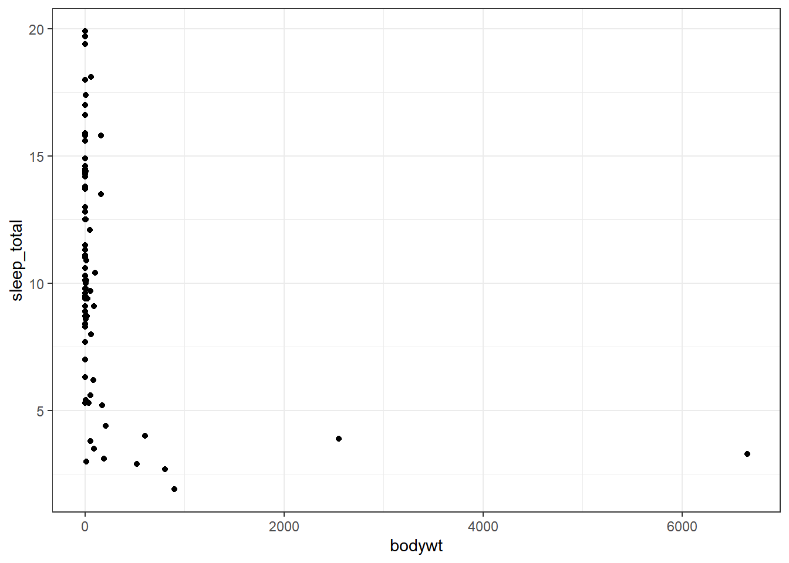
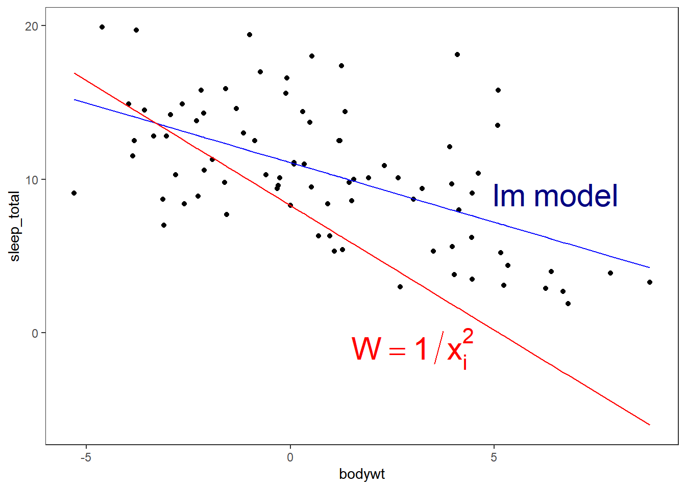
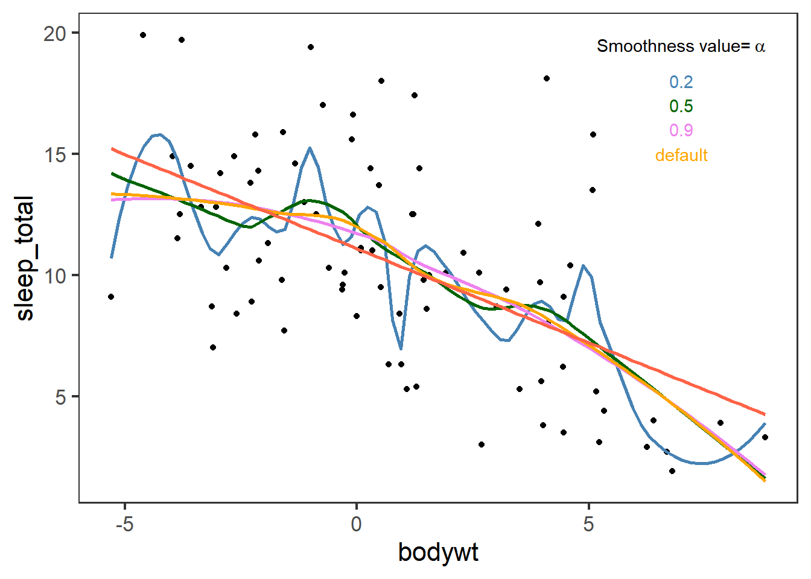

👩 This week we will use the following packages as always, load them at the beginning of the session 👨
library(tidyverse)
library(EnvStats)This week we will cover the steps that you will need when the assumptions of linear regression are not met. If you remember the assumptions for regression are the following:
We should ensure that the model fitted meets all the assumptions. But what if it does not ???
Usually, having a constant variance over the range of prediction (Homoscedasticity) is a bit problematic. If there is non-constant variance you will need to give weights to the cases to match the variances among your points.
Larger weights causes smaller variance \(Var(y_{i}|Xi)=\sigma^2/w_{i}\) where \(i=1,...n\) and weights \(w_{i}>0\) are known levels. Let’s take the sleeping time of animals as an example.
data(msleep)
ggplot(msleep,aes(x=bodywt,y=sleep_total))+
geom_point()+
theme_bw()
Clearly, we do not have a normal distribution, some animals have very large bodyweight. We will use a log transformation to have a better distribution.
msleep$bodywt<-log(msleep$bodywt)
msleep$bodywt[16]
## [1] 0
msleep$bodywt[16]<-0.0000001Now body weight is more uniform with a distribution closer to normal. Notice that with log-transformation we encounter a species with a bw=0 so we changed that value as little as possible for our regression analysis because you will get an error if you use 0.
fit_lm<-lm(sleep_total~bodywt,msleep)
summary(fit_lm)
##
## Call:
## lm(formula = sleep_total ~ bodywt, data = msleep)
##
## Residuals:
## Min 1Q Median 3Q Max
## -6.4991 -2.5671 -0.1683 2.0471 10.1928
##
## Coefficients:
## Estimate Std. Error t value Pr(>|t|)
## (Intercept) 11.0891 0.4178 26.542 < 2e-16 ***
## bodywt -0.7771 0.1249 -6.222 2.05e-08 ***
## ---
## Signif. codes: 0 '***' 0.001 '**' 0.01 '*' 0.05 '.' 0.1 ' ' 1
##
## Residual standard error: 3.683 on 81 degrees of freedom
## Multiple R-squared: 0.3233, Adjusted R-squared: 0.315
## F-statistic: 38.71 on 1 and 81 DF, p-value: 2.046e-08Now to add weights into the model you will need the parameter weights and type a formula that will be added to each \(x_i\)
fit_weights<-lm(sleep_total~bodywt,weights = (1/msleep$bodywt^2),data=msleep)
summary(fit_weights)
##
## Call:
## lm(formula = sleep_total ~ bodywt, data = msleep, weights = (1/msleep$bodywt^2))
##
## Weighted Residuals:
## Min 1Q Median 3Q Max
## -2.044 0.075 1.397 2.926 97.917
##
## Coefficients:
## Estimate Std. Error t value Pr(>|t|)
## (Intercept) 8.300e+00 1.490e-06 5.571e+06 <2e-16 ***
## bodywt -1.625e+00 1.635e+00 -9.940e-01 0.323
## ---
## Signif. codes: 0 '***' 0.001 '**' 0.01 '*' 0.05 '.' 0.1 ' ' 1
##
## Residual standard error: 14.81 on 81 degrees of freedom
## Multiple R-squared: 0.01204, Adjusted R-squared: -0.0001536
## F-statistic: 0.9874 on 1 and 81 DF, p-value: 0.3233Our two models will look like the following:
ggplot(msleep,aes(x=bodywt,y=sleep_total))+
geom_point()+
geom_line(data=fortify(fit_lm),aes(x=bodywt,y=.fitted),colour="blue")+
geom_line(data=fortify(fit_weights),aes(x=bodywt,y=.fitted),colour="red")+
annotate("text",x=c(3,6.5),y=c(-1,9),
label=c(expression("W== 1/x[i]^2"),
expression("lm~model")),parse=T, #must be included to have the right format
colour=c("red","navy"), #different colours for each text
size=8)+
theme_test()
This part will cover some model checking methods to decide if the form of the mean function used to obtain a fitted model is reasonable in a particular regression. That is, whether there is something wrong with the observations for which the fit is not good.
ggplot(msleep,aes(x=bodywt,y=sleep_total))+
geom_point()+
geom_smooth(aes(outfit=regressionvalues_02<<-..y..),span=0.2,colour="steelblue",se=F)+
geom_smooth(aes(outfit=regressionvalues_05<<-..y..),span=0.5,colour="darkgreen",se=F)+
geom_smooth(aes(outfit=regressionvalues_09<<-..y..),span=0.9,colour="violet",se=F)+
geom_smooth(aes(outfit=regressionvalues_00<<-..y..),colour="orange",se=F)+
stat_smooth(method = "lm",colour="tomato",se=F)+
annotate("text",x=7,y=c(19.5,18,17,16,15),label=c(bquote("Smoothness value="~alpha),"0.2","0.5","0.9","default") ,colour=c("black","steelblue","darkgreen","violet","orange"),parse=T)+
theme_test(base_size=16)
Ggplot with geom_smooth or stat_smooth use by default a smooth polynomial regression. That is, for the fit at point \(x\), the fit is made using points in a neighbourhood of \(x\), weighted by their distance from \(x\) (with differences in ‘parametric’ variables being ignored when computing the distance). The size of the neighbourhood is controlled by \(\alpha\) (set by span=x as in the previous plot). You can find more information here.
We added outfit to the geom_smooth in order to store the ..y.. values of the fitted regression in a new variable<-. It will only give you 80 points.
head(regressionvalues_00,20)
## [1] 13.35127 13.33551 13.31757 13.29744 13.27509 13.25049 13.22363 13.19449
## [9] 13.16304 13.12927 13.09314 13.05464 13.01375 12.97037 12.92343 12.87250
## [17] 12.81739 12.75796 12.69405 12.62550*In these course we focus in linear model but geom_smooth can integrate all types of models= (e.g. “lm”, “glm”, “gam”, “loess” or a function from other packages MASS::rlm or mgcv::gam) and formulas= (e.g. y ~ x, y ~ poly(x, 2), y ~ log(x)) once specified.
We will test if our model has too much variation due to a lack of fit with an F-test. Let’s bring our initial lm and get the ANOVA results.
anova(fit_lm)
## Analysis of Variance Table
##
## Response: sleep_total
## Df Sum Sq Mean Sq F value Pr(>F)
## bodywt 1 525.14 525.14 38.707 2.046e-08 ***
## Residuals 81 1098.93 13.57
## ---
## Signif. codes: 0 '***' 0.001 '**' 0.01 '*' 0.05 '.' 0.1 ' ' 1The RSS are 1098.925779. We will break the Residual Sum of Squares into SSLF:Sum of Squares Lack of Fit and SSPE: Sum of Squares pure error.
olsrr::ols_pure_error_anova(fit_lm)
## Lack of Fit F Test
## ------------------------
## Response : sleep_total
## Predictor: bodywt
##
## Analysis of Variance Table
## ------------------------------------------------------------------------
## DF Sum Sq Mean Sq F Value Pr(>F)
## ------------------------------------------------------------------------
## bodywt 1 525.1398 525.1398 105027.95 7.307278e-128
## Residual 81 1098.926 13.56698
## Lack of fit 80 1098.921 13.73651 2747.302 0.0151741
## Pure Error 1 0.005 0.005
## ------------------------------------------------------------------------
EnvStats::anovaPE(fit_lm)
## Df Sum Sq Mean Sq F value Pr(>F)
## bodywt 1 525.14 525.14 105028.0 0.001964 **
## Lack of Fit 80 1098.92 13.74 2747.3 0.015174 *
## Pure Error 1 0.01 0.01
## ---
## Signif. codes: 0 '***' 0.001 '**' 0.01 '*' 0.05 '.' 0.1 ' ' 1The F-statistic \(F^*=\frac{MSLF}{MSPE}\) for the Lack of fit helps us in testing:
In our example, the P-value is small than the significance level α, meaning that we reject the null hypothesis \(H_0\) in favour of the alternative \(H_A\). Therefore, there is enough evidence at the α level to conclude that there is a lack of fit in the current model.
We get similar lack of fit results with the weighted regression:
olsrr::ols_pure_error_anova(fit_weights)
## Lack of Fit F Test
## ------------------------
## Response : sleep_total
## Predictor: bodywt
##
## Analysis of Variance Table
## --------------------------------------------------------------------------
## DF Sum Sq Mean Sq F Value Pr(>F)
## --------------------------------------------------------------------------
## bodywt 1 216.5156 216.5156 43303.12 2.68224e-112
## Residual 81 1e+28 1.234568e+26
## Lack of fit 80 1e+28 1.25e+26 2.5e+28 5.03052e-15
## Pure Error 1 0.005 0.005
## --------------------------------------------------------------------------
EnvStats::anovaPE(fit_weights)
## Df Sum Sq Mean Sq F value Pr(>F)
## bodywt 1 216.5 216.52 393.37 0.03207 *
## Lack of Fit 80 17760.9 222.01 403.35 0.03959 *
## Pure Error 1 0.6 0.55
## ---
## Signif. codes: 0 '***' 0.001 '**' 0.01 '*' 0.05 '.' 0.1 ' ' 1Therefore, if we test if there is a difference between models we obtain a non-significant difference.
fit2<-lm(msleep$sleep_total~factor(msleep$bodywt),data=msleep)
anova(fit_weights,fit2)
## Analysis of Variance Table
##
## Response: sleep_total
## Df Sum Sq Mean Sq F value Pr(>F)
## bodywt 1 216.5 216.52 0.9874 0.3233
## Residuals 81 17761.4 219.28